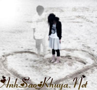

|
Anh và cô ... Hai con người xa lạ, đã gặp và đế ý nhau trong một chương trình ca nhạc, chỉ một sự vô ý khi cả hai cùng đưa vé vào cửa cho bảo chú soát vé và cùng nói " Một mình đi coi ca nhạc thật vô vị" ... Bất giác cả 2 cùng quay sang nhìn nhau, và tình cảm họ nảy sinh từ đó ... Từ những tin nhắn, rồi đến những lần chat với nhau, và những cuộc điện thoại đầy ấp tiếng cười, dần dần anh và cô đã yêu nhau, đã quen với cảm giác muốn được ở bên nhau, và cả hai được mọi người ngưỡng mộ, một tình yêu đẹp đã mở ra một thế giới hạnh phúc cho hai người. Những tháng ngày bên nhau, họ vui có, buồn cũng có, cãi nhau và giận hờn là chuyện mà đôi lứa nào cũng từng trải, và những lần cãi nhau, anh luôn gọi điện thoại cho cô, để được nghe giọng nói của cô, để được nói lời xin lỗi cô ... Những lúc như vậy, cô đều chủ động tắt điện thoại, hoặc để đến khi nào anh không gọi nữa thì thôi, đến một lúc nào đó cô nguôi giận, cô sẽ gọi cho anh, và cả hai lại tiếp tục cười nói vui vẻ, vốn dĩ tình yêu luôn đi cùng với giận hờn, nếu không đó chỉ là 1 tình cảm vô vị và tẻ nhạt, anh và cô đều hiểu rằng, khi cãi nhau cả hai đều buồn, nhưng lúc đó là khi sự nhớ nhung nhau tăng lên vô vàn ... Cũng như thường lệ, lần này cả anh và cô lại cãi nhau, rồi cô giận, nguyên nhân là do anh một tin nhắn với nội dung yêu đương gửi vào máy anh, cả anh và cô đều ngỡ ngàng, và mặc cho anh minh oan thế nào, với cô anh bây giờ là kẻ phản bội, anh rất buồn ... còn cô thì chưa điều tra rõ mọi việc, đã quyết định sẽ trừng phạt anh bằng cách không gặp anh trong vài ngày, những tin nhắn của anh đến cô đều không thèm đọc và xoá ngay, còn những cuộc gọi luôn luôn không có giọng nói nào trả lời ... Vào một buổi chiều sau đó 2 ngày, cũng là ngày 8/3, là ngày mà anh nghĩ sẽ xin lỗi cô bằng một bó hoa thật to, sau khi đi làm về, anh chạy ngay ra tiệm mua bó hoa hồng với 18 bông hoa thật tươi, tượng trưng cho 18 tháng anh và cô bên nhau ... Trên đường qua nhà cô, anh luôn cười vì nghĩ rằng sẽ đựơc cô tha thứ, và cả hai là hạnh phúc bên nhau, nhưng ... Nằm trước mui xe tải ...là chiếc xe mang biển số của anh ...là thân xác anh đang nằm run lên ...là bàn tay anh nắm chặt bó hoa 8.3 đầy máu ... Người ta chỉ kịp liên lạc với mẹ anh, đưa anh vào bệnh viện gần nhất để cấp cứu, trên tay anh vẫn nắm chặt bó hoa, cả gia đình anh đã có mặt đầy đủ, và nghe 1 câu nói của bác sĩ " Hãy vào gặp bệnh nhân lần cuối" , cả gia đình anh đều khóc, bó hoa vẫn nằm kế bên cái ra trải giường, đầu anh quấn đầy băng, nhịp tim đã rất yếu, anh tỉnh lại, cố mở mắt để nhìn cả gia đình, và cố thều thào " Con muộn gặp cô ấy lần cuối " ... Mẹ anh oà khóc, bà cố dằn xúc động để cầm điện thoại anh lên, gọi vào số máy của cô, tín hiệu không có ai bắt máy ... Về phần cô, cô đang nằm đọc báo và sơn móng tay, nhìn thấy điện thoại rung, cô vẫn điềm nhiêm thực hiện tiếp công việc này, đến cuộc gọi nhỡ thứ 13, thì máy không còn rung nữa, cô không biết rằng đây là lần cuối cùng cô gặp được anh, cô vẫn nghĩ rằng đến khi nào mình nguôi giận thì mình sẽ tìm anh ... Anh đã ra đi ...  Mẹ anh khóc oà, bà đã cố gắng thực hiện ước mong cuối cùng của con trai, và gia đình anh cũng ko dằn được những xúc động ... Cố gắng đến hơi sức cuối cùng, nhưng anh biết mọi hy vọng đã chấm dứt, bàn tay anh nằm yên bất động, lúc nước mắt anh rơi, cũng là lúc đôi mắt anh mãi mãi không còn mở ra nữa ... Anh đã chết vì mất máu quá nhiều ... Anh đang nằm yên trong chiếc quan tài gỗ mộc mạc, với tấm di ảnh của anh ... Ngày mà cô chủ động gọi điện cho anh, cũng là ngày mà cô khóc rất nhiều, rất nhiều khi nghe được tin anh đã ra đi ... Cô nắm tay bàn tay không còn hơi ấm của anh, ôm cái thân xác đã không còn linh hồn của anh, để rồi cô hối tiếc, cô tự trách bản thân mình, vì đã không được đến để gặp anh lần cuối, để rồi giờ đây mãi mãi ước mong của anh không thành hiện thực được nữa ... Hối tiếc liệu có quá muộn ... Nguồn: ASK sưu tầm || Tham gia bình luận TẠI ĐÂY ||
Bạn vô tình đọc ở đâu đó một câu chuyện tình cảm động hoặc một câu chuyện do chính bạn viết ra. Hãy đến với chúng tôi để cùng nhau chia sẻ: wWw.anhsaokhuya.net
Chung tay vì một thế giới online lành mạnh !
|